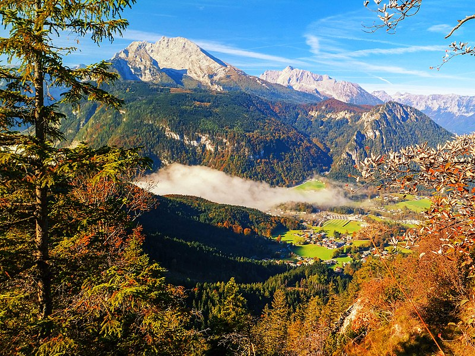
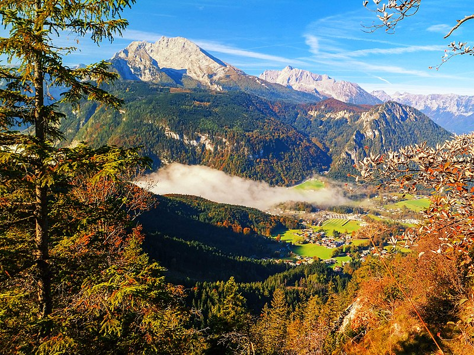

Germany
 

Germany, officially the Federal Republic of Germany, is a country in Central Europe. It is the second-most populous country in Europe after Russia, and the most populous member state of the European Union
Germany, is my top travel destination because since infancy, i've always been fascinated by their advancement in Technology and always dreamt of either studying or working there someday.
Canada


Canada, Known for it's diversity in people and culture is the second destination on my list.
Canada is a country in North America. Its ten provinces and three territories extend from the Atlantic Ocean to the Pacific Ocean and northward into the Arctic Ocean, making it the world's second-largest country by total area, with the world's longest coastline. It is characterized by a wide range of both meteorologic and geological regions. The country is sparsely inhabited, with the vast majority residing south of the 55th parallel in urban areas. Canada's capital is Ottawa and its three largest metropolitan areas are Toronto, Montreal, and Vancouver
Rwanda
")
Rwanda, an African country that has been able to transform it's country from a dreadful civil war to one of the beacons on the continent, a visit won't be a bad idea.
Republic of Rwanda,[10] is a landlocked country in the Great Rift Valley of Central Africa, where the African Great Lakes region and Southeast Africa converge. Located a few degrees south of the Equator, Rwanda is bordered by Uganda, Tanzania, Burundi, and the Democratic Republic of the Congo. It is highly elevated, giving it the soubriquet "land of a thousand hills", with its geography dominated by mountains in the west and savanna to the southeast, with numerous lakes throughout the country.